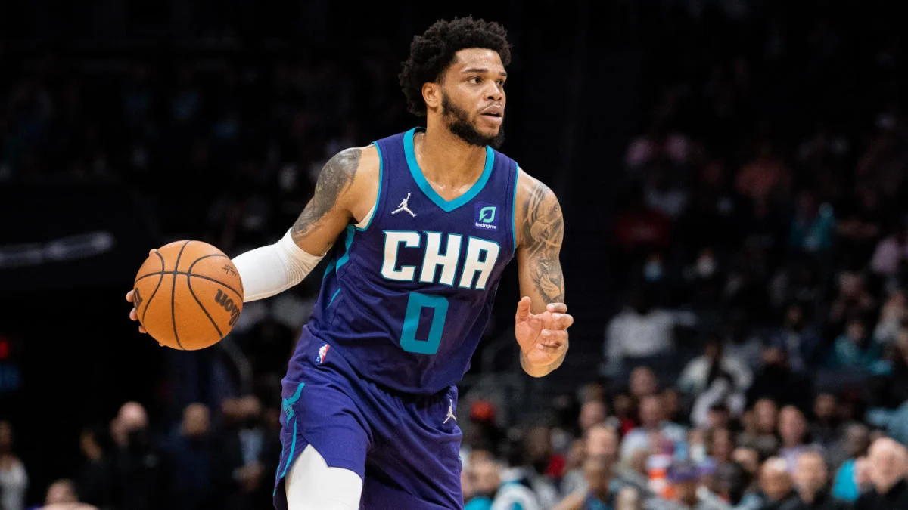

Com grande atuação de Stephen Curry, Golden State Warriors derrota Cleveland Cavaliers na NBA
Com 40 pontos na conta, Stephen Curry foi o destaque da vitória do atual campeão Golden State Warriors sobre o Cleveland Cavaliers por 106 a 101 na noite dessa sexta-feira (11), pela NBA. O triunfo foi consolidado nos momentos finais do confronto. Além de ser decisivo na construção do placar, o armador ainda deu sua contribuição com cinco assistências, quatro rebotes e ainda um desarme.
A bela atuação do cestinha da partida coincide com o bom momento da equipe, que após uma fase ruim, onde sofreu cinco derrotas seguidas, emplaca agora a segunda vitória na competição e sobe para o 11º posto na Conferência Oeste.
Já o Cleveland Cavaliers não atravessa um bom momento. Depois de oito vitórias no torneio, o time do brasileiro Raulzinho já amarga a terceira derrota seguida e ocupa o quarto lugar na Conferência Leste.
Em um jogo marcado pelo equilíbrio, Curry levantou a torcida ao empatar o duelo com uma cesta de três a 1 min18seg do fim. Em seguida, fez uma bandeja após assistência de Kevon Looney e acertou mais um lance de três para chegar aos 40 pontos no jogo.
Pelo lado do Cavaliers, o protagonismo ficou por conta de Donovan Mitchell, que fez 29 pontos, pegou 10 rebotes e serviu os companheiros com nove assistências. No entanto, a sua performance não foi suficiente para garantir a vitória na casa do adversário.

Lakers e Pistons monitoram Miles Bridges como possível reforço
Casos de violência são vistos, antes de tudo, com muita seriedade pela NBA. Mas, com o começo da temporada, as necessidades competitivas se sobrepõem a questões morais para várias franquias. De acordo com Shams Charania, do site The Athletic, o Los Angeles Lakers e Detroit Pistons monitoram a situação de Miles Bridges e consideram a sua contratação.
O ala de 24 anos não está em quadra por causa de um caso de agressão contra a parceira. Ele foi acusado de agredir a mãe dos seus dois filhos e, além disso, ser uma ameaça às crianças. Não contestou as acusações e, com isso, aceitou uma condenação de três anos de liberdade condicional.
O interesse da franquia de Los Angeles não chega a ser uma surpresa nos bastidores. Em primeiro lugar, os angelinos estão em busca de reforços após o seu péssimo início de campanha. E, além disso, o jovem ala e LeBron James compartilham o mesmo empresário: Rich Paul. Essa “ponte” ajudaria a avançar uma possível negociação.